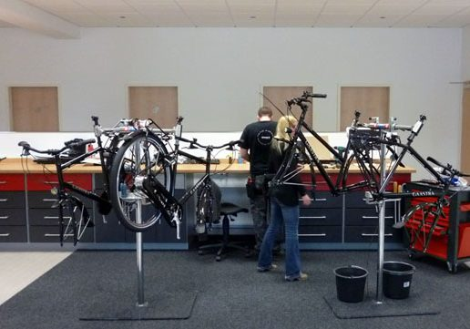

Idworx
Master Dealer
In 1999 opgericht door Gerrit Gaastra, gebouwd in zijn atelier Bike Basics in Duitsland. Eén fiets, één monteur, met handgemaakte aluminium en titanium frames. De volgorde van eisen: extreem duurzaam en betrouwbaar, zo min mogelijk onderhoud, zo breed mogelijk inzetbaar, en pas dan zo licht mogelijk.